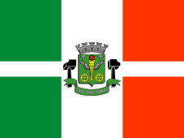

BANDEIRA DE OSASCO

HISTÓRIA DA CIDADE
Osasco (pronúncia AFI: [o'zaskʊ]) é um município brasileiro localizado na Região Metropolitana de São
Paulo, no estado de São Paulo, no Brasil. Nascido como um bairro da capital paulista no final do
século XIX, tornou-se município emancipado após um plebiscito em 1962. Ocupa uma área de 64,954 km², e
sua população estimada no ano de 2019 era de 698 418 habitantes, sendo o 8º mais populoso do estado de
São Paulo
Possui importante atividade econômica nos setores industrial, comercial e de serviços. Conforme o censo do
IBGE, com dados de 2017, Osasco possui o 6º maior Produto Interno Bruto do Brasil e o 2º maior do Estado de
São Paulo, ficando à frente de muitas capitais estaduais brasileiras, como Salvador, Fortaleza e
Recife, sendo a cidade não capital com o mais alto PIB da nação naquele ano.
O lema da cidade é Urbs labor, frase latina que significa Cidade trabalho, e seu padroeiro é Santo
Antônio, sendo 13 de junho (data comemorativa do santo) feriado municipal.
LOCAIS IMPERDÍVEIS PARA VOCÊ VISITAR EM OSASCO
- Pet Parque Municipal de Osasco
- Osasco Plaza Shopping
- Borboletário
- Parque Ecológico Dionísio Alvarez Mateos
- Shopping União de Osasco
- Museu Histórico Bradesco União de Osasco
- Museu Dimitri Sensaud de Lavaud
- Ponte Metálica
- Calçadão de Osasco